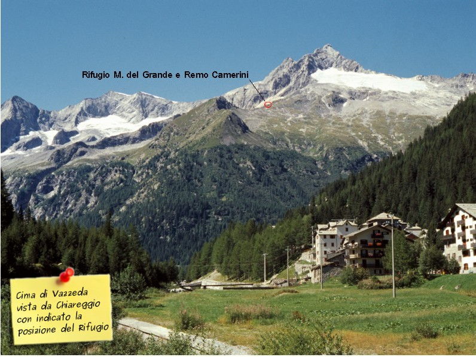

Mario del Grande e Remo Camerini
|
|
||
|
|
|
|
| I percorsi per raggiunger il Rifugio Mario del Grande e Remo Camerini |
||
| Sentiero per le alpi di Vazzeda 301-305 | Percorso classico per raggiungere il rifugio seguendo la 3ª tappa dell' Alta Via della Valmalenco | |
| Sentiero alta via per la val Sissone AV301-305 | Percorso lungo, passa sotto la parete nord del M.te Disgrazia e chiude la 3ª tappa dell' Alta Via della Valmalenco; molto panoramico in discesa | |
| Sentiero per l'alpe Sissone 325 | Percorso breve per raggiungere il rifugio, sale nel bosco dall' Alpe Laresin; presenta alcuni tratti con elevata pendenza | |
| Anello dei 2 rifugi | Aperto di recente, permette di raggiungere la Capanna Forno in Svizzera e di rientrare al nostro rifugio tramite il passo Forno ed il passo Vazzeda ( per escursionisti esperti e attrezzati)a | |
| Sentiero Del Grande Camerini - Rif Longoni | Percorso che raggiunge il Rif. Longoni passando dall'Alpe dell'Oro senza scendere fino a Chiareggio | |
| Sentiero Italia tappa 291B | Rifugio Gerli-Porro (1960m); Forbicina (1620m); Rifugio DelGrande Camerini (2580m); Chiareggio (1610m) |
|  |

|
| Come raggiungere il punto di partenza a Chiareggio
Raggiunta la città di Sondrio si svolta verso nord seguendo le indicazioni per Chiesa in Valmalenco. Superato l'abitato di Chiesa si prosegue per la frazione di San Giuseppe, dopodichè proseguendo per una stretta strada si raggiunge l'abitato di Chiareggio. Oltre il paese si può trovare un ampio parcheggio sul fianco del torrente Mallero. |